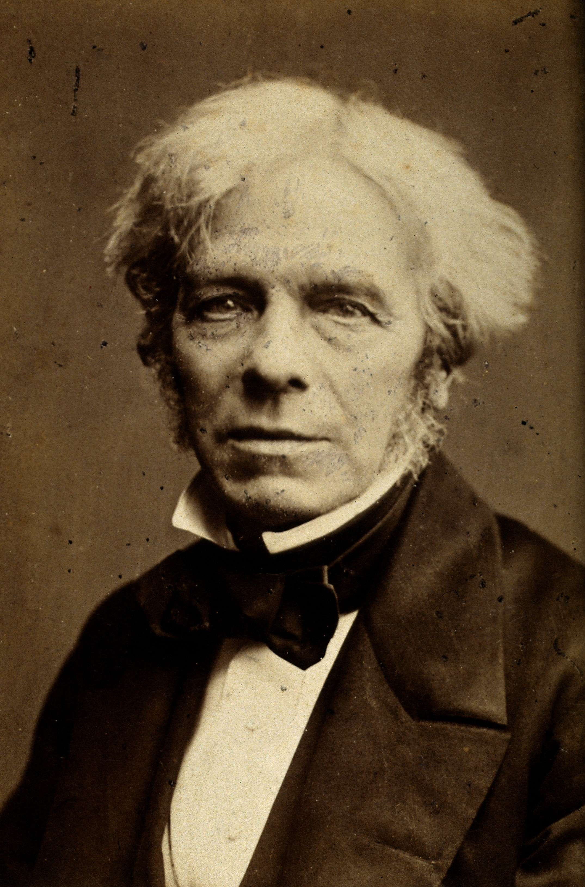
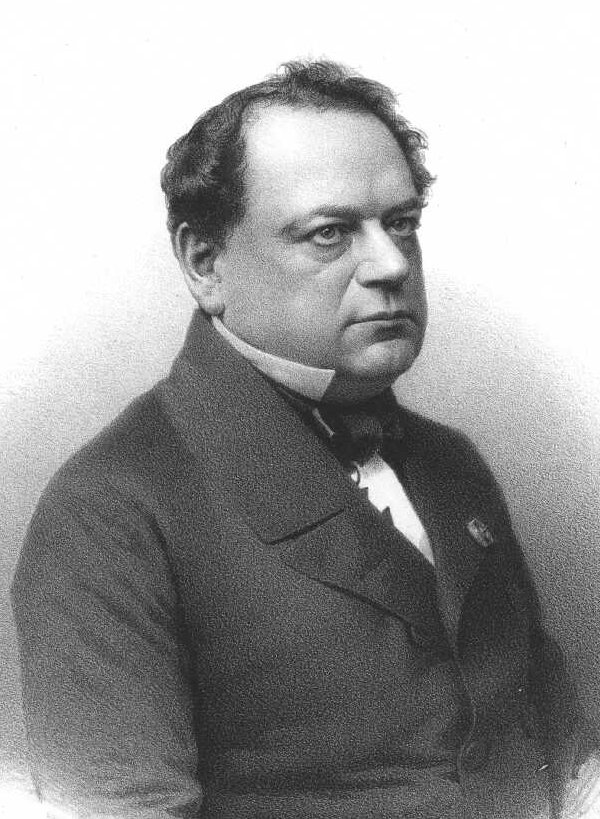

Леонардо да Винчи был итальянским полиматом эпохи Высокого Возрождения. Он был активен как художник, инженер, ученый, скульптор, архитектор и теоретик. Леонардо ди сер Пьеро да Винчи родился 15 апреля 1452 года в селении Анкиано, около городка Винчи, близ Флоренции, и умер 2 мая 1519 года в замке Кло-Люсе во Франции. Он был похоронен в Шапелле Святого Губерта в Амбуазе, Франция. Леонардо да Винчи считается одним из величайших художников и ученых всех времен. Он оказал влияние на многих художников и ученых своего времени и после него, включая Микеланджело, Рафаэля, Никколо Макиавелли и многих других. Леонардо также был известен своими научными открытиями и изобретениями. Он проводил исследования в различных областях, включая анатомию, ботанику, геологию, оптику, механику, инженерное дело и физику. Некоторые из его научных открытий и изобретений включают: Исследования анатомии: Леонардо проводил детальные анатомические исследования человеческого тела, создавая детальные рисунки и записи, которые значительно влияли на развитие медицины. Воздушный винт: Он разработал концепцию воздушного винта, предвосхитив будущее развитие вертолетов. Гидравлические системы: Леонардо разрабатывал различные гидравлические машины и системы, включая системы для подъема воды и движения колес. Оптика: Он проводил исследования в области оптики и перспективы, что привело к разработке новых методов изображения и понимания света и теней. Пионерские работы в геологии: Леонардо проводил исследования в области геологии, изучая формирование горных пород и феномены земной коры.
Корнелиус Дреббель внес значительный вклад в различные области науки и техники. Его наиболее известное изобретение - подводная лодка, которую он создал в 1620 году. Это было первое работающее подводное средство, способное погружаться и всплывать, и имело значительный вклад в развитие подводной техники. Кроме того, его работа в области систем измерения и управления, оптики и химии также оказала влияние на научные и технические достижения. Некоторые другие важные вклады Корнелиуса Дреббеля в науку включают: Разработка первого микроскопа с двойными линзами, что сделало возможным увеличение изображения и улучшило качество оптических инструментов. Исследования в области химии, включая работу с различными химическими соединениями и эксперименты с воздухом, водой и другими веществами. Разработка устройств для измерения времени, включая часы и другие устройства точного измерения времени.
Ефим Прокопьевич Никонов был русским изобретателем, который внес значительный вклад в развитие науки. Вот некоторая информация о нем и его достижениях: Ефим Прокопьевич Никонов родился в селе Покровское-Рубцово, но точная дата его рождения неизвестна. По указанию Петра I, Никонов построил модель и полноразмерное подводное судно под названием "Потаенное судно". Это стало первой построенной русской подводной лодкой. В 1719 году, Ефим Никонов подал челобитную на имя Петра I, в которой сообщал о своей способности построить подводное судно. Его работа в области подводной техники имела значительное значение для развития этой отрасли науки.
Роберт Фултон был американским инженером и изобретателем, который внес значительный вклад в различные области науки. Вот некоторая информация о нем и его достижениях: Роберт Фултон родился 14 ноября 1765 года в Литтл-Бритн, Пенсильвания, и умер 24 февраля 1815 года в Нью-Йорке, Нью-Йорк. Он стал создателем одного из первых пароходов и проекта одной из первых подводных лодок. Фултон привнес современный инженерный подход в создание парохода, основанный на математике и эмпирических данных. Его наиболее известным изобретением был пароход "Клермонт", который в 1807 году совершил первое коммерческое плавание по реке Гудзон. Роберт Фултон также работал над улучшением паровых двигателей и разработал систему парового водоснабжения для городов. Он проводил исследования в области гидравлики и судостроения, что способствовало развитию судоходства и транспорта. В своей работе Фултон активно использовал научные принципы и технические знания, что сделало его вклад в науку и технику значительным.
Иван Федорович Александровский (1817-1894) внес значительный вклад в науку, особенно в области кораблестроения и подводной техники. Он разработал и построил первую в Российской империи подводную лодку с механическим приводом, что оказало влияние на дальнейшее развитие подводной техники и судостроения. Александровский также проводил исследования в области кораблестроения, гидродинамики и технических аспектов подводной техники, активно используя инженерные принципы и технические знания. Таким образом, его научные достижения и изобретения сыграли важную роль в развитии подводной техники и кораблестроения.

Макс Лобёфе оставил неизгладимый след в области науки, сосредотачив свои усилия на физике и электронике. Его значимые исследования в сфере полупроводников привели к разработке новых материалов и технологий, повышая эффективность устройств. Помимо этого, его вклад в электронику не ограничивается только теоретическими изысканиями, ведь благодаря его трудам появились новые устройства и улучшены существующие технологии. Лобёфе также известен своими исследованиями в области оптики и фотоники, где он разработал инновационные методы и приборы для измерения света и его взаимодействия с материалами. В результате его трудов, научные достижения Макса Лобёфе оказывают практическое воздействие в различных областях, включая медицину, энергетику и информационные технологии, подтверждая важность его вклада для современных технологий и научных открытий.
Алессандро Вольта, итальянский физик и химик, внес огромный научный вклад в область электричества и химии в конце XVIII - начале XIX века. Его изобретение вольтова столба - первой электрической батареи, открытие электродинамической силы и исследования в области электрохимии положили фундамент для развития электротехники и химической науки. Вольт также внес вклад в изучение электрических цепей, а его имя навсегда осталось в истории благодаря названию единицы электродвижущей силы - вольта.
Ханс Кристиан Эрстед, датский ученый, внес значительный вклад в развитие электрохимии и электролиза. Его ключевые исследования касались электролитического разложения веществ под воздействием электрического тока. В 1807 году Эрстед впервые провел успешный опыт по разложению воды на кислород и водород - открытие, которое стало фундаментом для дальнейших разработок в области электролиза и водородной энергетики.
Французский ученый Андре-Мари Ампер сыграл ключевую роль в развитии электродинамики - науки об электрических токах и их взаимодействии. В 1820 году он сформулировал законы, описывающие магнитное взаимодействие токов, что стало известно как законы Ампера. Его работы заложили фундамент для развития теории электромагнетизма, а его имя стало синонимом единицы измерения электрического тока - ампера. В своих исследованиях Ампер оставил непередаваемый вклад в понимание фундаментальных законов электромагнетизма.
Майкл Фарадей, британский физик и химик, стал одним из величайших ученых в истории электромагнетизма. В 1831 году Фарадей открыл явление электромагнитной индукции, демонстрируя, что изменение магнитного поля вокруг проводника порождает электрический ток. Его исследования также охватывали электролиз, где он внес существенные вклады в понимание химических процессов, происходящих при прохождении электрического тока через электролиты.
Джозеф Генри, американский физик, внес огромный вклад в развитие электромагнетизма. Его работы включают в себя создание первого электромагнита и разработку электромагнитных машин. В 1831 году, независимо от Фарадея, Генри также обнаружил явление электромагнитной индукции. Его исследования в области электромагнетизма стали основой для создания электромагнитных устройств, включая телеграф.
Российский физик Эмиль Хенри Ленц сделал важные вклады в электромагнетизм и термодинамику. В 1834 году он формулировал закон Ленца, который описывает явление самоиндукции в электрических цепях. Его исследования в области термодинамики, в частности, внесли существенные поправки в первый закон термодинамики, ставший известным как закон сохранения энергии.
Уильям Стёрджен, английский физик и инженер, внес вклад в развитие электротехники и электромагнетизма. В 1830-х годах он провел ряд успешных экспериментов, демонстрируя принцип работы трансформатора. Его работы также включают изучение магнитных явлений и разработку методов управления магнитными полями в электромагнитных устройствах.
Борис Семенович Якоби, русско-немецкий математик и физик, оставил незабвенный след в развитии математики в XIX веке. Его исследования охватывали широкий спектр математических тем, включая теорию эллиптических функций, дифференциальные уравнения и алгебру. Якоби внес вклад в развитие математической физики, особенно в области теории волн и механики. Его труды стали важным компонентом математического наследия XIX века.
Вернер фон Сименс, немецкий инженер и промышленник, играл ключевую роль в развитии электротехники и промышленности XIX века. Основав компанию Siemens & Halske, он стал важным участником в превращении электричества в мощный фактор производства. Сименс внес существенный вклад в теорию электромагнетизма, а его технологические инновации в области электротехники и энергетики сформировали основу для современных электротехнологий и индустрии.
Михаил Осипович Доливо-Добровольский, российский инженер и электрик, сделал выдающийся вклад в развитие электротехники в конце XIX и начале XX века. Его работы связаны с теорией и практикой электрических систем переменного тока. Доливо-Добровольский является одним из создателей трехфазной электроэнергетики, что существенно повлияло на развитие электроиндустрии и улучшило эффективность передачи электроэнергии на большие расстояния.
Сергей Константинович Джевецкий, советский инженер и изобретатель, внес значительный вклад в развитие радиотехники и связи. Его работы охватывают различные аспекты радиотехнических систем, включая совершенствование радиосвязи и радионавигации. Джевецкий также активно участвовал в разработке радиолокационных технологий и систем, что сделало его ключевой фигурой в развитии советской радиоиндустрии.
Густав Задэ, французский ученый и инженер, сыграл важную роль в развитии электроники и термоэлектроники в первой половине XX века. Его исследования касались явления термоэлектронной эмиссии и создания вакуумных электронных приборов. Задэ также внес значительный вклад в разработку теории электронных ламп и электронных устройств, что стало ключевым фактором в развитии современных технологий электроники.